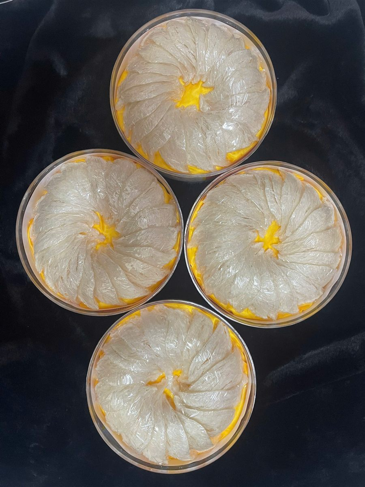
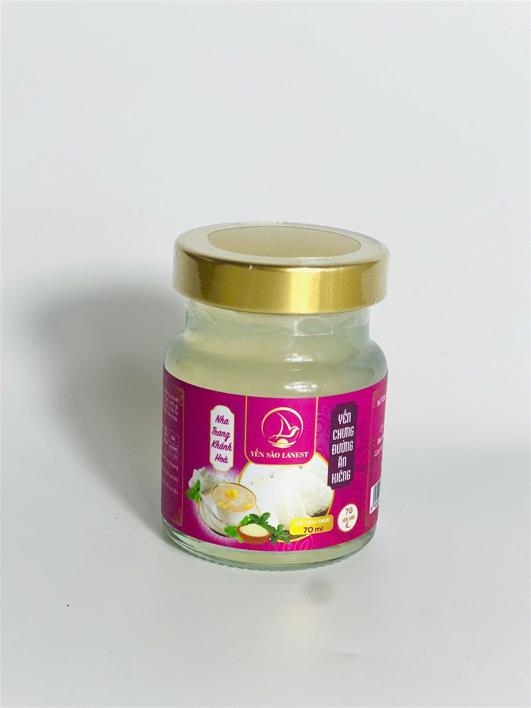

Yến Sào Có Giúp Giảm Cân, Đẹp Da Không? Sự Thật Cần Biết
Yến Sào Lanest · Đăng ngày 17/10/2026

Câu Lanest nghe nhiều nhất từ chị em mua yến là: "Ăn yến có giúp giảm cân, đẹp da không em?". Người làm yến nói thật thì yến sào giảm cân đẹp da không phải chuyện thần kỳ như nhiều quảng cáo vẫn hứa. Yến là thực phẩm giàu đạm, không phải thuốc giảm cân, cũng không phải mỹ phẩm. Bài này nói rõ trong tổ yến có gì theo kết quả kiểm nghiệm thật, chỗ nào nên tin, chỗ nào nên dè chừng.
Tổ yến tinh chế Lanest đã làm sạch, đắp tổ, đặt trong hộp
1. Nói thẳng trước: yến không phải thuốc giảm cân
Lanest chưa có nghiên cứu hay kết quả kiểm nghiệm nào cho thấy ăn yến làm giảm cân, nên Lanest không hứa điều đó. Bản mô tả các vị yến chưng của Lanest có ghi rõ câu lưu ý: "Sản phẩm này không phải là thuốc và không có tác dụng thay thế thuốc chữa bệnh." Trên web, Lanest cũng từng viết rằng yến không phải "thần dược tức thì", chỉ có ích khi được dùng đúng cách và đều đặn.
Vậy nếu đang muốn giảm cân, anh chị nên xem yến là một món bồi bổ nhẹ trong thực đơn, không phải thứ "đốt mỡ" thay cho chế độ ăn và vận động. Nơi nào hứa "ăn yến giảm X kg" thì anh chị nên hỏi lại họ lấy bằng chứng từ đâu.
2. Trong tổ yến có gì? Số liệu kiểm nghiệm thật
Thay vì nói chung chung "yến bổ lắm", Lanest đưa ra con số. Mẫu Yến Sào Tinh Chế Lanest gửi kiểm nghiệm tại AVATEK (mẫu nhận ngày 25/01/2024) cho kết quả:
| Đạm (protein) | 62,7% |
| Acid amin | 17 loại đo được, tổng 48,1% (mẫu phân tích riêng, nhận ngày 28/02/2024) |
| Salmonella | Không phát hiện |
| Kim loại nặng (chì, thủy ngân, cadimi, arsen, antimon) | Không phát hiện |
| Nitrit, SO2, hydro peroxit | Không phát hiện |
Một điều cần nói cho đúng: các tài liệu phổ thông về yến (kể cả trang tổng quan về yến sào của Lanest) thường ghi tổ yến có khoảng 45–55% protein. Con số 62,7% ở trên là kết quả của một mẫu cụ thể, không phải con số cho mọi loại yến, mọi lô hàng. Hàm lượng đạm cao nghĩa là yến là thực phẩm giàu đạm, chứ con số này không tự nó chứng minh tác dụng giảm cân hay làm đẹp.
3. Còn chuyện "đẹp da" thì sao?
Yến sào từ lâu được người dùng tìm đến với mong muốn làm đẹp da, chậm lão hóa, và các bài viết về yến, kể cả của Lanest, vẫn nhắc điều này. Nhưng Lanest muốn anh chị phân biệt hai thứ:
- Kinh nghiệm dân gian và mô tả chung: yến được dùng để bồi bổ, làm đẹp. Đây là điều nhiều người tin và truyền lại.
- Điều đã được kiểm chứng trên sản phẩm của Lanest: hàm lượng đạm, acid amin và các chỉ tiêu an toàn trong bảng ở mục 2. Lanest chưa có nghiên cứu riêng về tác dụng lên làn da.
Một chi tiết hay bị hiểu lầm: dòng yến hũ chưng sẵn 7g yến tươi của Lanest có collagen thủy phân trong thành phần ở phần lớn các vị (hai vị dành cho trẻ em thì không có). Đó là thành phần được ghi trên nhãn, không phải lời hứa da sẽ căng mịn sau bao nhiêu ngày uống. Nói thật để anh chị chọn mua với kỳ vọng đúng.
4. Cái cần để ý nhất: đường trong món yến chưng
Người đang giữ cân hay ăn kiêng thường chỉ nhìn chữ "yến" mà quên phần đi kèm. Đường phèn cũng là đường. Theo thành phần công bố trên nhãn:
- Yến chưng đường phèn (dòng 7g yến tươi): có 8g đường phèn trong mỗi hũ 70ml.
- Tổ yến chưng đường phèn nguyên chất: đường phèn chiếm 8% thành phần.
- Yến chưng đường ăn kiêng và Yến chưng đông trùng hạ thảo ăn kiêng: thay đường phèn bằng 2,4g đường isomalt (một loại đường dùng cho người ăn kiêng).

Hũ Yến Chưng Đường Ăn Kiêng 70ml: dùng đường isomalt thay cho đường phèn
Nếu tự chưng yến tinh chế ở nhà, anh chị chủ động được lượng đường: có thể giảm bớt hoặc không cho đường phèn, chưng cùng táo đỏ, hạt sen để có vị ngọt nhẹ tự nhiên. Hướng dẫn trên nhãn Yến Sào Tinh Chế Lanest là cho đường phèn vào ở 5 phút cuối, nên muốn bớt ngọt thì chỉ cần bớt ở bước này. Chi tiết xem bài hướng dẫn chưng yến đúng cách.
5. Ăn bao nhiêu, lúc nào là vừa?
Ăn nhiều không có nghĩa là tốt hơn. Các hướng dẫn trên web Lanest ghi hai mức tần suất cho người trưởng thành: một bài ghi 2–3 lần/tuần, một bài ghi 3–5 lần/tuần. Lanest khuyên bắt đầu ở mức nhẹ hơn:
- Lượng: khoảng 5–10g yến khô mỗi lần với người lớn.
- Tần suất: 2–3 lần/tuần, dùng đều đặn thay vì ăn dồn dập rồi bỏ ngang.
- Thời điểm: buổi tối trước khi ngủ khoảng 1 tiếng hoặc sáng sớm, không ăn ngay sau bữa chính.
- Cách nấu: chưng cách thủy nhẹ, không đun sôi trực tiếp.
Xem thêm bài hướng dẫn dùng yến đúng cách cho từng độ tuổi.
6. Ai nên hỏi bác sĩ trước khi dùng yến thường xuyên?
Yến là thực phẩm bồi bổ, không thay thế thuốc. Nếu anh chị đang điều trị bệnh, đang uống thuốc hằng ngày, hoặc đang phải kiểm soát đường huyết, hãy hỏi ý kiến bác sĩ điều trị trước khi đưa yến vào thực đơn thường xuyên, và nhớ tính cả lượng đường trong món chưng. Khi dùng sản phẩm, nếu thấy dấu hiệu lạ thì ngưng lại, đúng như cảnh báo in trên nhãn.
Câu hỏi thường gặp
Ăn yến có giúp giảm cân không?
Lanest không có bằng chứng nào cho thấy yến làm giảm cân, nên không hứa điều đó. Yến là thực phẩm giàu đạm; muốn giữ cân, anh chị nên chú ý nhất đến lượng đường đi kèm trong món chưng.
Uống yến hũ mỗi ngày có đẹp da không?
Làm đẹp da là kinh nghiệm dân gian được nhắc nhiều, nhưng Lanest chưa có nghiên cứu riêng về tác dụng lên da. Không cần uống mỗi ngày; dùng đều 2–3 lần/tuần là đủ.
Người ăn kiêng nên chọn loại yến nào?
Có thể chọn vị Đường ăn kiêng hoặc Đông trùng hạ thảo ăn kiêng (dùng đường isomalt thay đường phèn), hoặc tự chưng yến tinh chế và giảm đường. Người đang điều trị bệnh nên hỏi bác sĩ trước.